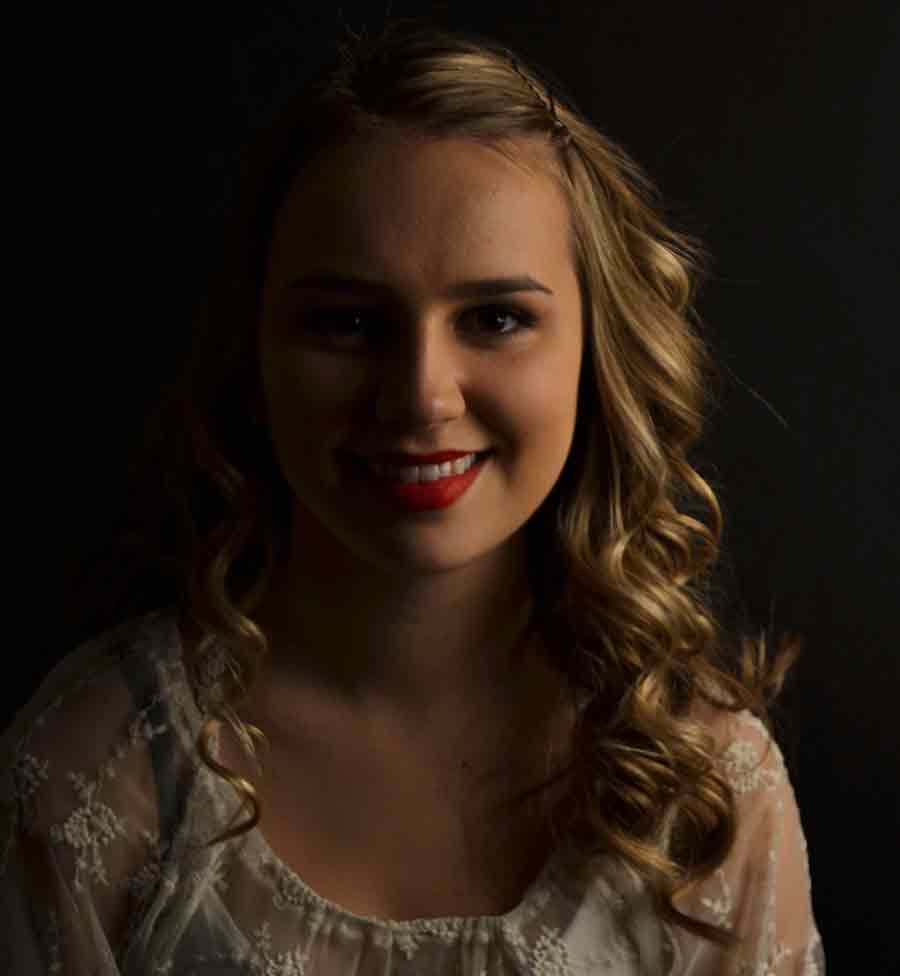

Hi there! I am Eryn and here’s a little bit about me. Straight out of high school I entered into the graphic design program at Algonquin College, where I am following my passion for art. I love expressing myself creatively in many forms and medias. I love illustration, logo and icon design, and creating clever but practical packing. It fascinates me how choosing the right - or the wrong - typography can make a project intriguing or totally illegible. I also have a passion for photography from simple black and white images to the natural beauty of people and landscapes to abstract creations. Integrating these into a design can create fascinating outcomes.